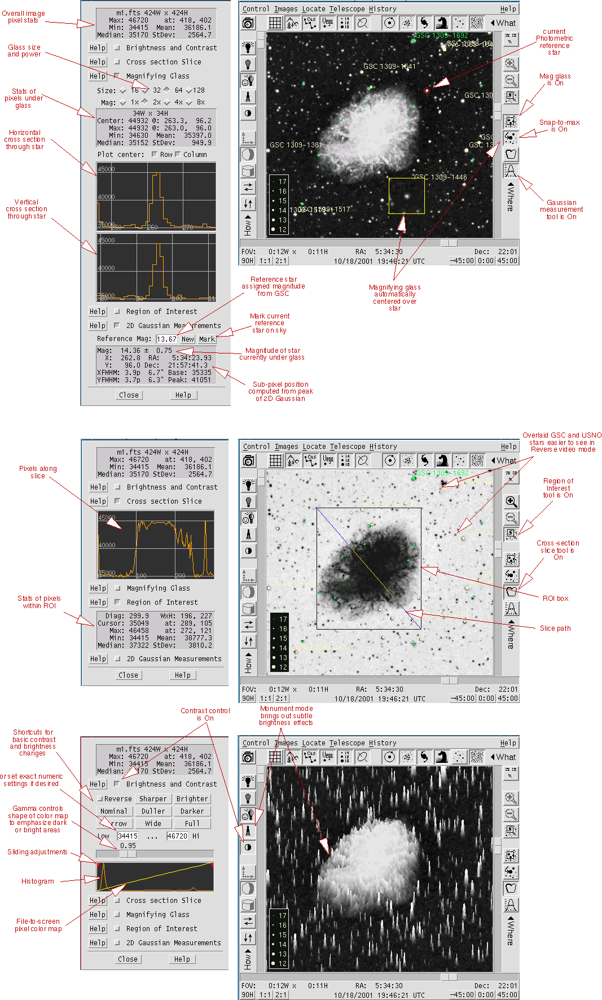

Image measurements include contrast, magnifying glass, three modes of statistics, unique Monument mode, cross-sectional slice, sub-pixel astrometry and relative photometry based on 2D Gaussian fits. (Please scroll down, there are three sets of images and controls)
